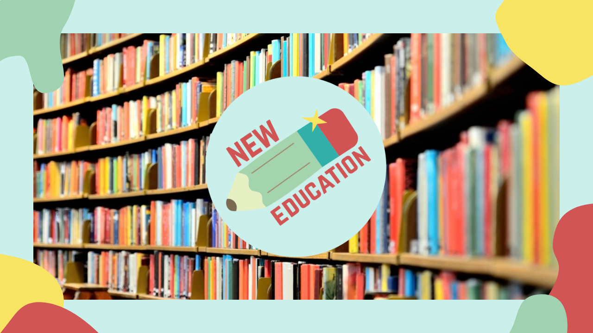
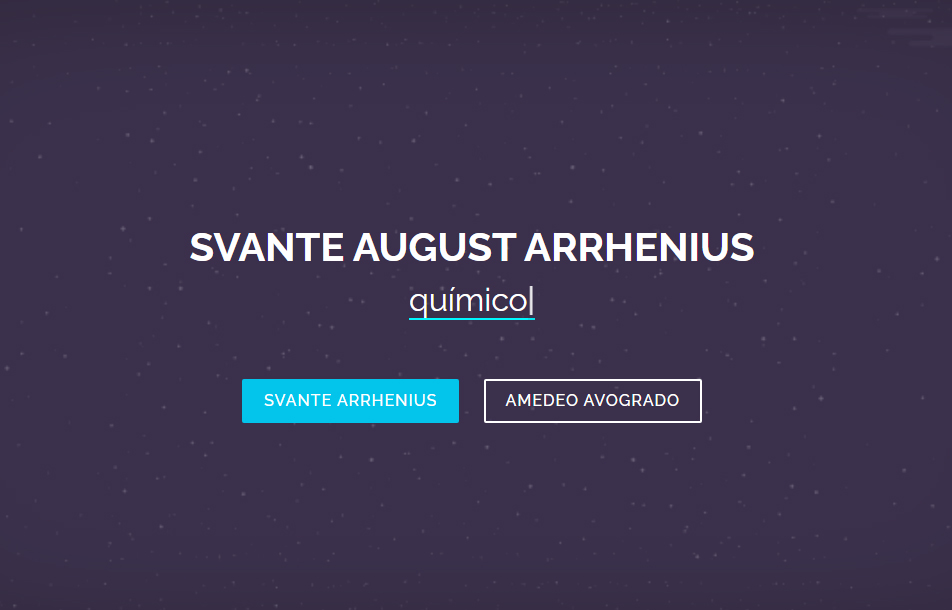
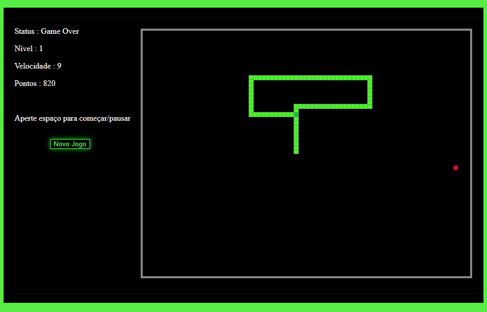

Bianca Silva
LinkedinQuem sou?
Me chamo Bianca Letícia Floriano da Silva, tenho 16 anos e atualmente estou cursando o Técnico em Informatica para a Internet Integrado ao Ensino Médio na Etec Prof.ª Maria Cristina Medeiros de Ribeirão Pires.
Embora não seja tão boa em determinadas áreas tento me esforçar para conseguir o melhor. Sempre me interessei pela área tecnológica principalmente na parte de design gráfico, programação e desenvolvimento de sites.
Trabalhos e hobbies
Interesse artístico
Desenhos, poesias, paródias e pinturas utilizando diferentes estilos e temas.

Programação
Desenvolvimento de códigos utilizando: C#, PHP, Python, Portugol, HTML, CSS, JavaScript, JQuery, entre outras.
Edição
Edição e conversão de imagens, animações, áudios e vídeos utilizando diversos programas e plataformas.
Pacote Office
Word, PowerPoint, Excel, Access, Sway e Publisher.
Sites e Apps
Criação e desenvolvimento de sites e aplicativos responsivos para diversas plataformas.

Banco de Dados
Criação, edição e análise de bandos de dados relacionais e não relacionais.
Competências Socioemocionais
Competências pela BNCC
Abertura ao novo
Sou muito disposta a aprender e conhecer novas áreas e assuntos, procuro sempre pesquisar, ler, ouvir podcasts e músicas, assistir documentários e vídeos para expandir meus conhecimentos.

Autogestão e Autonomia
Sou um pessoa organizada, focada, flexível porém crítica, resiliente e responsável, gosto de trabalhar em projetos e estou sempre buscando melhorias e visando o benefício pessoal e coletivo de forma sustentável e prática.

Consciência e cooperação
Prezo pelo diálogo para resolver qualquer situação, evitando julgamentos, reconhecendo meus erros e aceitando diferentes opiniões e críticas. Respeito e valorizo a diversidade.
Projetos
Site responsivo

Site criado como complemento curricular durante as aulas de Desenvolvimento e Design de Websites.
New Education
Site desenvolvido em grupo e hospedado como complemento curricular para as matérias de Biologia, Educação Física e Desenvolvimento e Design de Websites.
Químicos
Site sobre os químicos Svante Arrhenius (1856-1927) e Amedeo Avogadro (1776-1856), projeto pessoal desenvolvido e publicado no GitHub como complemento para a matéria de Química.
Snake Game
O clássico "Jogo da Cobrinha" utilizando a tag canva no html5. Projeto publicado no GitHub.
Aprendendo a Programar
Animação realizada como parte do Projeto Final do curso Aprendendo a Programar incluído na plataforma CodeIoT.
Figuras de Linguagem
Animação realizada em grupo sobre as figuras de linguagem Assíndeto e Polissíndeto para as matérias de Língua Portuguesa e Literatura (LPL) e Lógica de Programação.
Stop Motion
Animação realizada em grupo para a Feira Cultural e Tecnológica da Etec Profª Maria Cristina Medeiros de Ribeirão Pires.
Escrita
Textos, artigos, poemas, poesias, haikais, paródias, dentre outras composições textuais.
Contato
Entre em contato pelos seguintes canais: